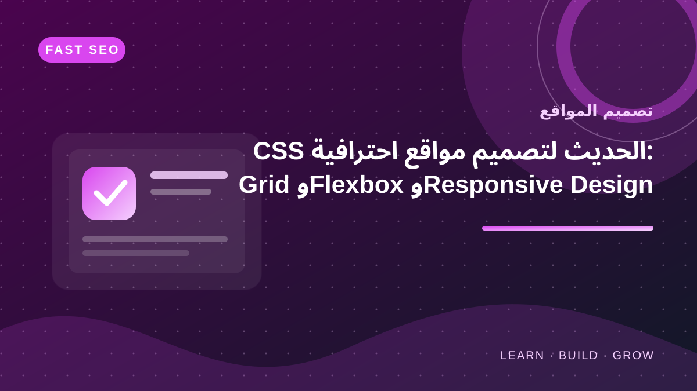

INTERFACE DESIGNتصميم واجهات الويب وتنسيق المكونات باستخدام CSS
استكشف تصميم المواقع
صمّم واجهات يسهل فهمها واستخدامها على مختلف الشاشات، مع مراعاة التسلسل البصري والتباين والمسافات.

MSEO KNOWLEDGE BASE
1 أدلة مختارةالأدلة في تصميم المواقع
تبحث عن موضوع محدد؟
إن كنت تبحث عن موضوع بعينه، جرّب البحث في الصفحة الرئيسية للوصول إلى الأدلة ذات الصلة.
ابحث في مكتبة MSEOWEB DESIGN
أسئلة شائعة عن تصميم المواقع
ما أولويات تصميم واجهة واضحة؟
رتّب المحتوى حسب أهمية المستخدم، واستخدم تباينًا مناسبًا وتسلسلًا بصريًا واضحًا ومسافات متسقة.
كيف أتحقق من توافق التصميم مع الهاتف؟
اختبر عروض شاشة متعددة، وتأكد من قابلية القراءة والتنقل وعدم وجود تمرير أفقي غير مقصود، واختبر على أجهزة فعلية متى أمكن.
هل يكفي اختيار ألوان جميلة؟
لا؛ افحص تباين النصوص وحالات التركيز وإمكانية الاستخدام بلوحة المفاتيح إلى جانب المظهر البصري.
استخدم فاحص تباين الألوان ومولد ألوان CSS ومعاينة التصميم المتجاوب.